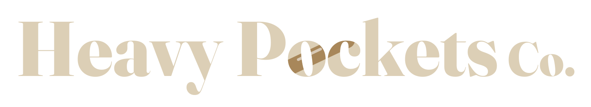
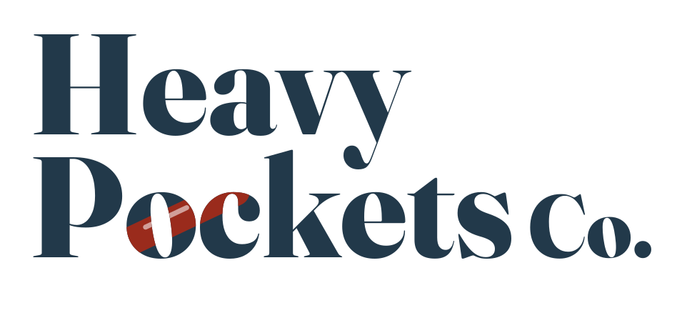

Head down. Pockets full.Secondary line: Dry rocks lie.
The whole brand comes from one rockhound habit: you wet a stone to see its true color. Everything here has a dry state and a wet state. Tap or hover on the swatches and the big type to see it.
Four colors from the beach, each with a dry and a wet value. Wet is deeper and richer, never brighter, because that is what water really does to stone. It also dries slower than it wets, like a real stone in the sun.
Neutrals: Beach fog #EEEDE8 (light background), Ink #1C1E1F (text), Night #14181B (dark background). Every text pairing passes the WCAG contrast check; run python3 scripts/check_contrast.py to see the numbers.
Type only, no pebble or pickaxe icon. Those are everywhere. The one idea is the lick: a single glossy streak across "oc" where the letters turn from dry to wet. It is the "I lick rocks" design shrunk into the logo.

Stacked. Hat fronts, square posts, and the profile picture.On screens, "1 in" is approximate. The real test is the printed sample at Step 6.
Three free Google Fonts, all under the SIL Open Font License, which allows commercial use, printing on products, and use in a logo.
Every shirt starts with a real stone from a Great Lakes beach. We print in the US, ship free, and tell you exactly what you are looking at, down to which "blue rock" is actually furnace slag.
Product pages, captions, and email.Rough direction sketches to show the kit working. They are not final art. Brian confirms every stone label before anything prints.
Wet slate ground, sand type, and stones in their wet colors. Labels in Plex Mono. Sketch labels only; the real list comes later.
Agate red bands, Fraunces italic and ExtraBold, on a sand tee.
Bumper-sticker layout on a dark tee. Sand and dry agate red: the dry values print brighter on dark fabric.
Dry gray grout, wet brown cells, and a dark eye in each. The real pattern is code-drawn at Step 7.
A dull, dry stone with one glossy lick where the true agate red shows through. The same streak as the logo.
A rockhound talking to another rockhound on the beach: head down, dry humor, and always accurate.